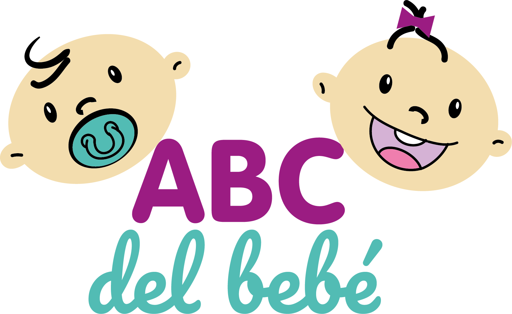

<nav class="navbar navbar-expand-md" id="navbar">
    <div class="container-fluid">
        <div class="imagenes-logo-div">
            <a href="#" class="imagen-logo-a">
                </a>
        </div>

        <button *ngIf="isNotToggle; else IsToogleTemplate" class="navbar-toggler" (click)="Ontoggler()" id="togSide" type="button" data-bs-toggle="collapse" data-bs-target="#navbarsExample03" aria-controls="navbarsExample03" aria-expanded="false" aria-label="Toggle navigation">
                <i class="fa-solid fa-bars"></i>
            </button>
        <ng-template #IsToogleTemplate>
            <button class="navbar-toggler" (click)="OnTogglerOut()" type="button">
                <i class="fa-solid fa-bars"></i>
            </button>
        </ng-template>
        <div class="collapse navbar-collapse" id="navbarsExample03">
            <ul class="navbar-nav me-auto mb-2 mb-md-0">
                <li class="textos-hero-li nav-item"><a [routerLink]="['home']" class="textos-hero-a nav-link">Inicio</a>
                </li>
                <li class="textos-hero-li nav-item"><a [routerLink]="['productos']" class="textos-hero-a nav-link">Productos</a></li>
                <li class="textos-hero-li nav-item"><a href="#nosotros" class="textos-hero-a nav-link">Nosotros</a>
                </li>
                <li class="textos-hero-li nav-item"><a href="#contacto" class="textos-hero-a nav-link">Contacto</a>
                </li>
            </ul>
            <ul class="navbar-nav">
                <li *ngIf="isLogged;" class="nav-item dropdown">
                    <a class="nav-link dropdown-toggle cta-1" href="#" id="dropdown05" data-bs-toggle="dropdown" aria-expanded="false"><i class="fa-solid fa-user"></i></a>
                    <ul class="dropdown-menu" aria-labelledby="dropdown05">
                        <a class="dropdown-item cta-2" [routerLink]="['editar_informacion']" href="#"><i class="fa-solid fa-user-secret"></i> Editar Informacion</a>
                        <a *ngIf="isAdminLogged;" [routerLink]="['vista_admin']" class="dropdown-item cta-2"><i class="fa-solid fa-user-lock"></i> Administrar</a>
                    </ul>
                </li>
            </ul>
            <div class="buttom-close m-4" *ngIf="isLogged; else loggedOut">
                <button class="cta-1" (click)="logOut();">Cerrar Sesion</button>
            </div>
            <ng-template #loggedOut>
                <div class="buttons m-4">
                    <a class="cta-1" [routerLink]="['registro']"><i class="fa-solid fa-user"></i> Registrarse</a>
                    <a class="cta-1" [routerLink]="['login']"><i class="fa-solid fa-right-from-bracket"></i>
                            Ingresar</a>
                </div>
            </ng-template>
        </div>
    </div>
</nav>


<div class="svgDiv">
    <section class="header-2">
        <div class="svg-hero" style="height: 150px; overflow: hidden;"><svg viewBox="0 0 500 150" preserveAspectRatio="none" style="height: 100%; width: 100%;">
                <path d="M-1.41,59.70 C171.27,242.27 353.55,-6.41 501.97,39.95 L500.00,150.00 L0.00,150.00 Z"
                    style="stroke: none; fill: rgb(255, 255, 255);"></path>
            </svg></div>
    </section>
</div>